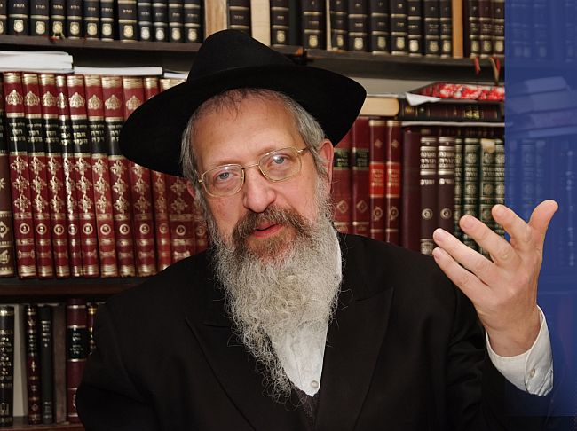

בדבר מלכות השבועי חורג הרבי ממנהגו לדבר על פרשת השבוע, ומקדיש את השיחה כולה לשאל
בדבר מלכות השבועי חורג הרבי ממנהגו לדבר על פרשת השבוע, ומקדיש את השיחה כולה לשאלה: היכן רואים שהעולם מוכן לגאולה? • הרבי מציג את מדינת צרפת כדוגמא לבירור העולם, ומאריך לתאר את המהפכה הרוחנית שחולל בצרפת בדור האחרון • בשיחה עם הרב פבזנר, יליד צרפת ורבם של חסידי חב”ד בצרפת, אנו מגלים עומקים חדשים בדבר
בדבר מלכות השבועי חורג הרבי ממנהגו לדבר על פרשת השבוע, ומקדיש את השיחה כולה לשאלה: היכן רואים שהעולם מוכן לגאולה? • הרבי מציג את מדינת צרפת כדוגמא לבירור העולם, ומאריך לתאר את המהפכה הרוחנית שחולל בצרפת בדור האחרון • בשיחה עם הרב פבזנר, יליד צרפת ורבם של חסידי חב”ד בצרפת, אנו מגלים עומקים חדשים בדבר מלכות השבועי, ומבינים טוב יותר את עוצמת הבירור של הקליפה הצרפתית

למרות הקפדתו של הרבי למקד את שיחותיו בפרשת השבוע, בהתאם להוראתו הידועה של רבינו הזקן שצריכים לחיות עם הזמן (של פרשת השבוע) - חרג הרבי ממנהגו, והקדיש את ההתוועדות כולה להסבר ארוך ומקיף על מוכנות העולם לקראת הגאולה.
את השיחה פותח הרבי בסיכום דבריו בתקופה האחרונה, שסיימו את כל עניני העבודה ועומדים מוכנים לגאולה האמיתית והשלמה על–ידי משיח צדקנו, תיכף ומיד ממש, ומציג את השאלה שמציקה לרבים וטובים: כיצד אפשר לומר שהעולם מוכן לגאולה, היכן רואים שינוי בעולם, שהעולם כיום מוכן יותר לגאולה מאשר בדורות הקודמים?!
נקודת הביאור של הרבי, היא, שכאשר יהודים מתיישבים במדינה מסויימת, ומנצלים את מנהגי המקום עבור תורה ומצוות - בזה הם מבררים את המדינה הזאת. ומכיוון שבדור האחרון הגיעו בני ישראל לכל מדינות העולם, ומשתמשים בנימוסי המדינות לענייני קדושה, הרי בזה ביררו את העולם כולו.
בנקודה זו עובר הרבי מהכלל אל הפרט, וקובע כי שלימות בירור העולם משתקף במיוחד בבירורה של מדינת צרפת, ובזה עוסקת רוב השיחה.
לקראת סיום השיחה מפליא הרבי בחשיבות פרסום הניסים בדורנו, וקובע כי זוהי ההוראה העיקרית משיחה זו: “מאחר שכבר עומדים לאחרי כל הענינים, והגאולה עדיין לא באה - דבר נכון ביותר הוא לעסוק בענין של “פירסומי ניסא”, לפרסם אצל עצמו ואצל הזולת, ובכל מקום ומקום - את הניסים שהקב”ה עושה עימנו, מתוך ידיעה שבזה קשורה הגאולה האמיתית והשלימה!”.
ביקשנו להבין טוב יותר את דבריו של הרבי אודות המהפיכה הרוחנית שהתחוללה בצרפת בדור האחרון, תוך ניצול התכונות המיוחדות של צרפת, ולשם כך קיימנו שיחה עם רבם של אנ”ש חסידי חב”ד בצרפת, וסגן אב”ד ועד רבני ליובאוויטש צרפת, הגאון החסיד הרב אברהם ברוך פבזנר שליט”א.
הרב פבזנר נולד לאביו הגה”ח ר’ הלל ע”ה, בפריז שבצרפת. הוא אמנם גדל בחממה החסידית של קהילת ליובאוויטש בצרפת, ובבית הוריו שררה בוודאי אווירה ליובאוויטשאית טהורה - אבל מחבריו לחדר ובישיבה, יכול היה לקבל מושג על המנטליות הצרפתית על כל גווניה. לאחר שנים רבות בהן התגורר בירושלים, לאחר שזכה להיות משלוחי הרבי לירושלים - חזר בשנת תשס”ט לצרפת, לאחר פטירת אביו ומינויו לממלא מקומו כרב הקהילה החב”דית.
הרב פבזנר זכה גם להיות נוכח בהקפות בשנת תשל”ד, כאשר הרבי ניגן לראשונה את “האדרת והאמונה” בניגון ההמנון הצרפתי, אודותיו מדובר בשיחה. במהלך שיחתנו הוא נזכר כיצד האורחים מצרפת נקראו להקפה מיוחדת, ולאחר אמירת הפסוקים ראה את הרבי לוקח בידו את הסידור, מתקרב עד קצה בימת התפילה, ומתחיל לשיר את ‘האדרת והאמונה’.
“כאחד שהתחנך באווירה חב”דית, לא היה מושג על איזה ניגון מדובר, אבל חבריי מהמקורבים הצרפתיים אמרו לי אחר–כך שהרבי שר את ההמנון הצרפתי… אגב, יש חלק נוסף בהמנון, שלא שרים אותו בניגון ‘האדרת והאמונה’, ולא הפך לחלק מהניגון החסידי”.
כדי לתאר את עוצמת המהפך הרוחני שהתחולל בצרפת בדור האחרון, מתחיל הרבי בתיאור מצבה הרוחני הירוד בדורות הקודמים, עד שרבינו הזקן קבע כי מדינה זו (בהנהגת נפוליון) היא “תוקף הקליפה והדין הקשה”, ומציין גם לדברי אדמו”ר האמצעי, שלא היה זה עניין זמני, אלא נוגע לכל הזמנים והדורות שלאחרי זה.
כאשר מסתכלים היום על המנטליות הצרפתית, האם אפשר לזהות עדיין את אותה קליפה קשה?
בהחלט כן. אלמנטים רבים במנטליות הצרפתית נחשבים לבעייתיים מאוד מנקודת מבט יהודית, והם קיימים עד היום. אלא, כפי שנדבר בהמשך בהרחבה, שבדור האחרון הרבי נתן לנו כוחות לנצל את אותם אלמנטים לקדושה.
בשיחה הזאת, יש כמה וכמה הערות שחתומות על ידי ה’מו”ל’, ובהן הרחבות ותיאורים שלא נאמרו על ידי הרבי בשיחה, אך חשובות מאוד להבנת הכיוון הכללי של השיחה. ואכן, רואים את התמונה הכללית, של ההיסטוריה הצרפתית במאתיים השנים האחרונות - אפשר להבין טוב יותר את החידוש של הרבי בשיחה.
מחד, חופש מוחלט, ומאידך מחוייבות רבנים לממשלה
אתמקד כעת בשתי נקודות חשובות בהוויי הצרפתי, שנובעות מהמהפכה הצרפתית - אחת במישור האישי, בקשר למנטליות הצרפתית; והשניה במישור הממלכתי - בקשר לסדרי הממשל בצרפת. שתיהן חוללו חורבן רוחני בזמנו של נפוליאון, והנס הוא שאותן נקודות עצמן מנוצלות בדורנו לפריחה הרוחנית של יהדות צרפת!
במישור האישי: הדגל העיקרי של המהפכה הצרפתית היה החירות של כל אדם להתנהג כרצונו, בלי עריצות המלך והמלכה. הבעייה הייתה, שבשנים ההן המלוכה הייתה קשורה עם דת (בין אם המלך עצמו היה אישיות דתית, ובין אם קיבל את תמיכתם של אנשי הדת), ולכן המרד נגד המלך כלל בחבילה אחת גם מרד נגד הדת. זאת אומרת, לצד ההתרסה נגד המלך - הייתה כאן התרסה דתית, ואמירה חילונית ברורה: האדם חופשי להחליט ככל העולה על רוחו, ואף אחד לא יכול לומר לו מה לעשות - לא המלך, ולא הסמכות הדתית.
כמובן שכל עוד מדובר בסמכות דתית של הגויים, זה לא ממש אמור להטריד אותנו. הבעייה הייתה שגם היהודים שנסחפו לרוח המהפכה, העתיקו את רעיונות החופש גם כלפי הסמכות של התורה להכתיב את אורח חייו של היהודי.
במישור הממלכתי: בשונה מארצות הברית, בה קיימת הפרדה מוחלטת בין הדת למדינה - בצרפת של נפוליאון ואילך אין הפרדה, אלא הדת היא חלק מהמדינה. הצרה היא, שבעוד שלדת אין יכולת השפעה על מהלכי המדינה, המדינה בהחלט מנסה להתערב בנושאים דתיים…
נפוליאון ביקש להוריד לפסים מעשיים את רעיונות המהפיכה, ולצורך כך הקים “סנהדרין” ובראשו נבחר לעמוד הרב יוסף דוד זינצהיים, פוסק הלכות חשוב, שמחידושו תורתו הנדפסים בשנים האחרונות ניכרת גדלותו בתורה. נפוליאון הציב בפניהם כמה ‘שאלות’, תוך שהוא מצפה שיענו בהתאם לרצונו. אחת השאלות הייתה: האם מותר ליהודים להתחתן עם גויים? למרות שהרבנים היו שפוטים של נפוליאון, הם לא יכלו לרדת לדיוטה תחתונה לגמרי ולהתיר נישואי תערובת, אבל בהחלט נכנעו לתכתיבים של נפוליאון בכך שקבעו כי על כל המתחתנים בנישואי תערובת לא יוטל עונש חרם.
בהמשך לאותה ‘סנהדרין’, הקים נפוליאון את ה’קונסיסטוריה’ - מוסד ממלכתי שמנהל את כל ענייני הדת של היהודים. במסגרת המוסד הזה מקבלים הרבנים הרשמיים את משכורתם ממשלת צרפת. לכאורה דבר נפלא, אלא שבעולם הזה אין ‘ארוחות חינם’, ובתמורה לתקציבים הממשלתיים, נדרשו הרבנים להשתלם במוסדות לרבנים, בהם לומדים לימודי חול.
השילוב הזה, של אווירת חופש מוחלט במישור האישי, לצד המחוייבות של הרבנים לממשלה במישור הציבורי - הביא לחורבן הרוחני של יהדות צרפת. רבים עזבו לגמרי את הדת, וגם אלו שנותרו דתיים - שמרו על הכלל שטבעו לימים הרפורמים: היה יהודי בביתך, וצרפתי בצאתך…
שוויון הזכויות שהוענק להם, לאחר מאות שנות דיכוי, סינוורו אותם לגמרי. הם נהנו להרגיש אזרחים צרפתיים לכל דבר, כולל התרבות הצרפתית לכל גווניה, ולגבי היהדות שלהם - הסתפקו בעריכת טקסים יהודיים עיקריים, ולימוד של עיקרי היהדות בבתי הספר של יום ראשון. בעקבות שוויון הזכויות, הם יכלו לראשונה ללמוד באוניברסיטאות, ולימודים אלו גררו מיידית ירידה בהקפדה על שמירת תורה ומצוות, ומכאן הדרך קצרה לנישואי תערובת באחוזים גבוהים.
“ומרדכי ידע את כל אשר נעשה” - רבינו הזקן ראה את כל זה כבר בתחילתה של המהפכה הצרפתית, ולכן היה כל כך נחרץ בהתנגדותו לנפוליאון.
באופן עקרוני, שתי נקודות אלו קיימות עד היום בצרפת:
במישור האישי: רעיונות החופש, שוויון הזכויות וחירותו של כל יחיד לעשות ככל העולה על רוחו - הן חלק אינטגרלי מהמנטליות הצרפתית.
ובמישור הממלכתי: גם היום מנוהלים חיי הדת היהודיים, באופן רשמי, על ידי הממשלה, והרבנים הרשמיים לומדים בבית ספר לרבנים. זכורני, שבהיותי תלמיד בישיבת תות”ל ברינואה, הזדמן לי לפגוש בתלמידי בית הספר לרבנים, ונדהמתי לשמוע שהם לומדים שם אפילו ביקורת המקרא, מה שבהחלט גרם לכמה מהם ספיקות באמיתות התורה, ר”ל.
וכיצד חולל הרבי את המהפכה הצרפתית השניה, הרוחנית? האם הרבי התעלם מאותם מוטיבים במנטליות הצרפתית, או שרתם אותם עצמם לשירות הקדושה?
זה למעשה החידוש הגדול בשיחה. הרבי מסביר שמעלת המהפיכה הצרפתית היא בכך שלקחו את הנימוסים הצרפתיים, ונעזרו בהם עצמם כדי לחולל את המהפיכה הרוחנית.
הרבי לא מפרט בשיחה, ולכן מובן שכל הבא להלן הוא בדרך אפשר בלבד:
אחד הקשיים שעמדו בפני תנועת התשובה שהרבי חולל בעולם כולו - היה בתגובה החריפה של הסביבה לנוכח השינויים שביקשו בעלי התשובה לבצע בחייהם. החברים, ובעיקר ההורים, לא יכלו לעכל את העובדה שהבן יקיר שלהם נוטש את החינוך שהעניקו לו, ומתחיל לשמור תורה ומצוות. יש בעלי תשובה רבים שנתקעו באמצע הדרך בגלל התגובות החריפות של ההורים.
בצרפת, דווקא בגלל אותה מנטליות הגורסת שכל אדם רשאי לעשות ככל העולה על רוחו - דרכם של בעלי התשובה הייתה הרבה יותר קלה. כמובן שבכל כלל היו יוצאים מהן הכלל, שנתקלו בקשיים. אבל באופן כללי, ההורים לא הציבו מכשולים בפני הצעירים שביקשו לטעום את תורת החסידות, ובעקבות כך החלו לשנות את אורחות חייהם.
כאשר הרה”ח ר’ שמואל (מולע) אזימוב, החל את פעולותיו בבית הספר ‘יבנה’ שהיה מעוז האליטות, והתלמידים הניחו תפילין - תחילה מחוץ לבית הספר ואחר–כך בבית הספר - ההורים לא היו מאושרים מכך, אבל הם לא יצאו נגד הבחירה של ילדיהם.
גם בזכות העובדה שבניגוד לארצות הברית, בצרפת הדת והמדינה הולכים יחד - מוסדות חב”דיים רבים הצליחו לקבל תקציבים, לפחות חלקיים, מהממשלה ומהעיריות. וכך, אותה נקודה שחוללה חורבן רוחני - מנוצלת כיום לפריחה רוחנית.
הזכרתי מקודם את ה’קונסיסטוריה’ שהקים נפוליון לניהול החיים היהודיים מתוך מטרה להחליש את שמירת התורה והמצוות, והנה לפני ארבעים שנה הצליח הרה”ח ר’ מולע אזימוב לרתום את הארגון הזה לסיוע ושיתוף פעולה בהפצת מבצעי הרבי! כך, למשל, לפני החגים מפרסם הארגון מודעות בכל רחבי צרפת, הקוראות ליהודים לקיים את מצוות החג. לפני פורים, הם מפרסמים מודעות על מניינים שנערכים במשך יום הפורים לקריאת המגילה, בשיתוף פעולה של ה’קונסיסטוריה’ וחב”ד. זה ממש אתהפכא מושלמת - אותו ארגון שנוסד להחליש את היהדות, מחזק את היהדות!
מהות חיצונית ופנימית
יש נקודה נוספת, שאני מאוד מסופק אם לכך התכוון הרבי בשיחה, אבל בהחלט כדאי לציין זאת: המנטליות הצרפתית מאפשרת לאדם לבצע הפרדה מוחלטת בין מהותו הפנימית לחזותו החיצונית. מבחינתם לא מופרך שאדם יהיה שומר תורה ומצוות במהותו, בשעה שחזותו החיצונית תהיה רחוקה מכך כרחוק מזרח ממערב…
זכורני, שפעם ישבתי בבית הכנסת באחד מפרברי פאריז, כשלפתע אני רואה צעיר וצעירה מחנים את מכוניתם בחצר בית הכנסת. בוא נאמר בלשון המעטה, המראה החיצוני שלהם לא העיד על יהדותם… ואז, למרבה הפתעתי, הם החלו להוציא מתא המטען של הרכב קופסאות של כלים והובילו אותם למקווה הכלים שבחצר בית הכנסת. הם הקפידו להסיר כל מדבקה ולטבול את הכלים לפי כל ההידורים, ולשם כך הביאו עוד כמה מבני משפחתם, ובמשך כשעתיים עסקו בהטבלת הכלים.
כיום, אני מתגורר בפריז בבניין של 26 קומות. בקומה ה–13 מתגוררים כמה צעירים, שמצד אחד חזותם החיצונית אינה מעידה על יהדותם, ומצד שני - בשבתות הם עולים את כל 13 הקומות במדרגות, כדי שלא לחלל שבת!
באופן עקרוני, מדובר בגישה קלוקלת כמובן. אבל, בצרפת גם גישה זו מנוצלת להפצת התורה והיהדות. אין כוונתי חלילה שהשלוחים מעודדים גישה זו, אלא שהמציאות הזאת מקלה מאוד על בעלי התשובה: בעוד שבמדינות אחרות התפיסה היא ש”או הכל או כלום”, ובשם גישה זו יהודים רבים נמנעים מלצעוד את צעדיהם הראשונים ביהדות - בצרפת הרבה יותר קל לאנשים להתקדם בחיי התורה והיהדות.
מהפך חיצוני, וגם פנימי!
בצרפת, מעבר לפעילות הקירוב האדירה, שנוהלה על ידי השלוחים - קיימים גם מוסדות חינוך חב”דיים לתפארת. ממוסדות ‘סיני’ המפוארים, ועד לישיבת תומכי תמימים בברינואה, אותה מזכיר הרבי בשיחה - במה הם קשורים למהפכה הצרפתית?
עבודתם של השלוחים אינה מוגבלת לקירוב יהודים לתורה ומצוות, אלא גם עבודה בתוך הקהילה החב”דית - וכפי שהרבי הדגיש זאת במכתב ההתייסדות של צעירי אגודת חב”ד בארצות הברית, כאשר תבע שכל אחד מחברי צא”ח יפעל גם עם סביבתו, וגם עם עצמו.
למעשה מדובר בשני שלבים של המהפיכה הרוחנית: השלב הראשון, הוא כאשר מצליחים להחדיר את הרוחנית לתוך הגשמיות. זה מה שקרה במהפיכת התשובה של צרפת. אבל אחר–כך צריכים להמשיך לשלב הבא, הפנימי יותר, כאשר הגשמיות עצמה הופכת לרוחנית. ובתרגום ל’צרפתית’ - כאשר צרפת עצמה הופכת למעצמה רוחנית. מהפך זה מתממש בזכות מוסדות החינוך, שגולת הכותרת שלהם היא הישיבה.
ובלשונו של הרבי בשיחה, “שנוסף לזה שנשיא דורנו נותן כח להמשיך קדושה גם בתחתון (אבל זה צריך להיות דווקא באופן שהקדושה נמשכת ממקום שני, מקומו של נשיא דורנו) - נותן הוא כח, שבמקום זה גופא עשו אותו מקום ומקור של תורה, על–ידי ייסוד ישיבת תומכי- תמימים שם, כמו בליובאוויטש לכתחילה, כאילו שזה אותו דבר עצמו ואין צורך להזדקק להשפעה מהמקור, כיון שהוא נעשה בדיוק כמו הענין עצמו”.
הדגש בשיחה הוא, שלא זו בלבד שהצליחו להחזיר בתשובה את יהודי צרפת - אלא שהצליחו להגיע איתם עד לרובד הכי עמוק, שהם עצמם הפכו לחסידים לכל דבר. אחד הדברים שמייחדים את בעלי התשובה הצרפתיים, שרבים מהם מתעלים למעמד ומצב כמו של חסידים מבטן ומלידה. הם הופכים להיות חסידים בעלי נגלה ובעלי חסידות, כאלה שלומדים חסידות לפני התפילה, משתתפים בחלוקת הש”ס בי”ט כסלו, ככל חסידי חב”ד. במילים אחרות, הם לא ‘בעלי תשובה’ אלא ‘חסידים’.
כאשר גיסי, הגאון החסיד ר’ יחיאל מנחם מענדל קלמנסון, ראש ישיבת תומכי תמימים ברינואה חיבר את סדרת ‘מי טל’ - הרבי מאוד נהנה מזה. כי זה מבטא את שלימות המהפכה הרוחנית בצרפת - תמורת חורבן היהדות, מבטאים הספרים הללו את פריחת היהדות, עד שצרפת הופכת מקור לחידושי תורה בעולם כולו. ספרים אלו נלמדים אף בישיבות מחוץ לחב”ד, ובצורה יוצאת דופן, ספריו יוצאים לאור על ידי ‘מכון ירושלים’, המדפיס בדרך כלל רק ספרים מתורתם של גדולי התורה בדורות הקודמים ולא עוסק בהדפסת ספרי חידושי תורה ממחברים בני זמננו.
ייתכן שעל כך התבטא הרבי בשיחה ש”מדפיסים שם (והדפיסו גם בעבר) דברי תורה, בתורת הנגלה ותורת החסידות, כולל - חידושי תורה, שגם זה מדגיש איך שצרפת וכו’ נעשים מקור לעניני תורה לכל העולם כולו, שגם אחרים מקבלים מעניני התורה שמדפיסים שם, ויכולים ללמוד בהם ואותיות מחכימות וכו’”.
זאת כמובן בנוסף לספרי הפלפולים שיוצאים מידי שנה על ידי הישיבה, פרי עטם של רבני הישיבה ותלמידיה.
כל אחד צריך לנצל את הכשרונות המיוחדים לו
אני בטוח שחסידי חב”ד בצרפת לומדים השבוע בהנאה מיוחדת את השיחה, שרובה עוסקת במהפך הרוחני של יהדות צרפת. שאלתי היא, מה המסר של השיחה לשאר יהודי העולם?
קודם כל, המסר המרכזי של השיחה, הוא שהעולם מוכן לגאולה. הרי כל אריכות השיחה מגיעה כתשובה לשאלה היכן רואים שהעולם מוכן לגאולה.
שנית, הרבי אומר שהידיעה כי בכוחו של הרבי הצליחו לברר אפילו את צרפת - מגלה כי בכוחו של הרבי אפשר לפעול את בירור העולם כולו, במקום הכי תחתון. וזה מהווה נתינת כוח גדולה לכל אחד במקום עבודתו, שלא להתייאש גם כאשר נראה שהשליחות שלו היא במקום תחתון ביותר.
ושלישית - מסר אישי לכל אחד:
יש חסידים, בפרט בני נוער, המציבים מול עיניהם דמות חסידית מסויימת כמודל שכמותו הם רוצים להיות. הם קוראים ספרים אודות אותו חסיד, מתלהבים מאישיותו, ורוצים להיות כמוהו.
באופן עקרוני, זהו דבר מבורך כמובן. אלא שבדרך להגשמת המטרה עושים לפעמים טעויות… במה דברים אמורים: לפעמים יש לבחורים מעלות מסויימות, שלא היו למודל שלהם, ומרוב שהם דבקים במטרה להיות כמו המודל שהציבו לעצמם, הם מוותרים על פיתוח אותן המעלות.
לדוגמא: בחור שרוצה להיות כמו משפיע או ראש ישיבה, או עסקן מסויים; נניח שלאותו בחור יש כישרון בציור, ומבקשים ממנו להקדיש חצי שעה - מחוץ לזמני הלימודים - לאיור חוברת להפצת המעיינות. הוא עלול לטעות ולחשוב, שמכיוון שאותו חסיד שהוא כל כך רוצה להיות כמוהו, לא התעסק בעיצובים - גם עליו להתנזר מכך…
על מקרה כזה אפשר להוציא מסר ברור מהשיחה על צרפת: כאשר יש כשרונות - צריכים לנצל אותם. כמובן במסגרת ההלכה והחסידות, אבל בהחלט לנצל.
אם כבר מדברים על הנושא הזה, אפשר לומר שזה אחד הדברים שמייחדים את בעלי התשובה הצרפתיים: כמעט כל אלו שהתקרבו באמצע הלימודים באוניברסיטה, קיבלו הנחייה מהרבי להמשיך בלימודיהם עד לקבלת התואר, במקביל להתקדמות בלימוד התורה ובשמירת המצוות. כיום יש הרבה חסידי חב”ד בצרפת, שגם מחזיקים בתארים אקדמאים, וגם מתנהגים כחסידים יראי שמים לכל דבר ועניין.
לפני שלושה שבועות נפטר בפריז ר’ מאיר אלעזר קולסקי ע”ה. הוא היה רופא גדול, מהמומחים בתחומו, בעל כשרונות נדירים בעולם הרפואה, ויחד עם זאת היה חסיד חב”ד בכל רמ”ח אבריו ושס”ה גידיו. הוא השכיל לנצל את מעמדו הרפואי כדי להשפיע על יהודים בענייני תורה ויראת שמים. הוא היה ביטוי לניצול הקליפה הצרפתית - לקדושה.